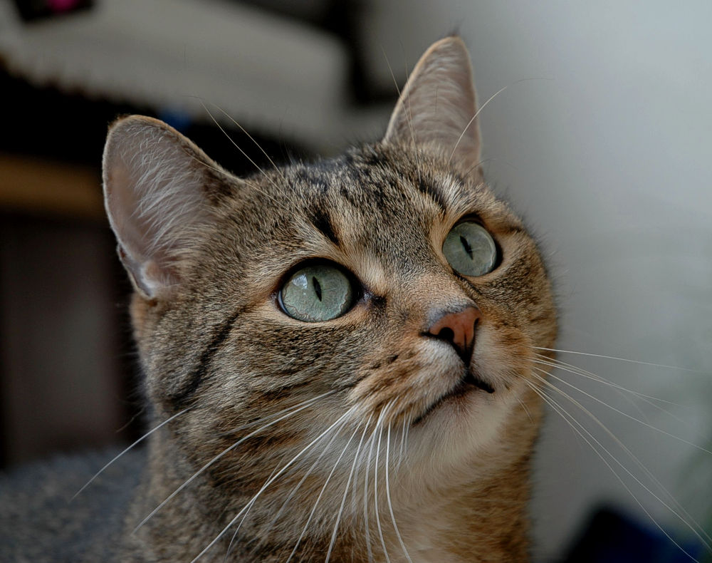

Zvířata
-
Zvíře je obvykle označení buď pro jakéhokoliv živočicha, nebo pro živočichy na vyšším stupni vývoje (například jen obratlovce), vyjma člověka.
- Z filozofického hlediska se jako zvíře obvykle označuje živá bytost, která není ani člověkem, ani božstvem, mytologickou postavou, nadpřirozenou bytostí apod.

- Římské právo řadilo zvířata, stejně jako otroky, do právního režimu věci. Některé přístupy přiznávají zvířatům způsobilost mít práva, avšak nikoliv způsobilost k právním úkonům, což je postavení obdobné malému dítěti, případně je řadí do kategorie „cítících věcí“.
- Aristotelská filozofie vymezila jasný rozdíl mezi zvířetem a člověkem. Zvíře je v ní pouhou vegetativní a smyslovou živou bytostí obdařenou schopností pohybu, člověk bytostí rozumnou a společenskou, duchovní, morální, a proto má i nesmrtelnou duši.
- Od vrcholného středověku si tuto koncepci plně osvojilo křesťanství. Karteziánská koncepce pojímala zvíře jen jako živý stroj, nepřiznávala mu status res cogitans, ale jen res extensa.
- Immanuel Kant nezahrnul zvířata do svého morálního systému a Johann Gottlieb Fichte je považoval za svrchované vlastnictví člověka (podobný názor vyjadřoval dříve svatý Augustin, Tomáš Akvinský a téměř všichni scholastičtí autoři).
Zvíře v českém právu
- Právo dříve považovalo zvířata za věci v právním smyslu. Bylo tomu tak u obecného občanského zákoníku, občanského zákoníku z roku 1950 i občanského zákoníku z roku 1964, který byl účinný až do konce roku 2013 a který je pouze několikrát okrajově zmiňoval (v § 127 kde „chované zvíře“ bylo zmíněno jako předmět vlastnictví, které nesmí vlastník nechat pronikat na sousedící pozemek, v § 599, kde se o vadách zvířat psalo jako o zvláštním případu vad věcí, a v § 620, který pojednával o záruční době prodávaných věcí).
- Tento přístup v České republice změnil až nový občanský zákoník, který v § 494 stanoví, že „živé zvíře má zvláštní význam a hodnotu již jako smysly nadaný živý tvor“. Zvíře již není věcí v právním smyslu, nicméně ustanovení o věcech se na něj použijí obdobně v tom rozsahu, ve kterém to neodporuje jeho povaze.
- Jde o důsledek moderního legislativního jevu, který se nazývá dereifikace (odvěcnění) zvířat.[3] Podobným způsobem je z právního režimu věci vyjmuto například i lidské tělo a jeho části. České soukromé právo je pak v ustanoveních § 1046–1049 občanského zákoníku obecně rozděluje na „zvířata s pánem“ a „zvířata bez pána“. Bez pána je vždy divoké zvíře, také zajaté zvíře nebo zkrocené zvíře, které není označeno, uprchne a jeho vlastník je nestíhá. Jde-li však už o domácí zvíře nebo o chované zvíře, bez pána nikdy není.
Více informací o zvířatech naleznete na této stránce.